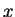

The problem becomes far more complicated if finite mass transfer rates are included. Although the plane solution of Nelson & Wood (1989) can be generalized to include these effects, as was done in chapter 4, the infinite plane parallel channel is the only geometry for which this is possible. In the narrow cavity limiting solution, there is a uniform transverse velocity which would be incompatible with the no-slip condition on any wall not normal to the -axis. The question of how diffusion-induced velocities interact with no-slip boundaries has been raised several times in the literature (§§3.2, 3.2.3, 3.3.3) but the difficulties caused by the coupling of the momentum and species equations via the interfacial velocity boundary condition have hindered theoretical progress. It seems certain, though, that some spanwise velocity must be present.